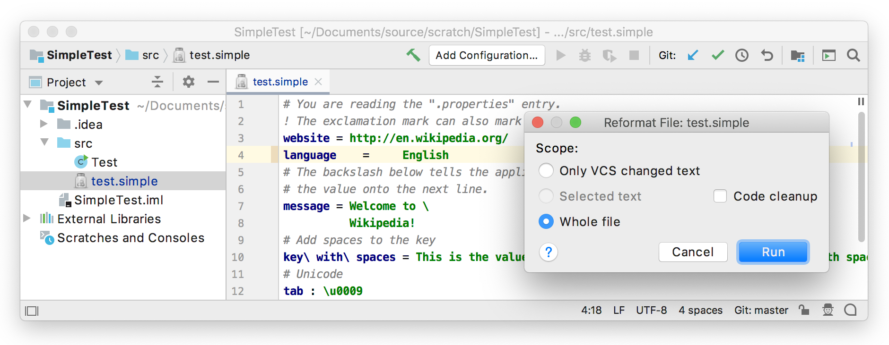

15. Formatter
The IntelliJ Platform includes a powerful framework for implementing formatting for custom languages. A formatter enables reformatting code automatically based on code style settings. The formatter controls spaces, indents, wrap, and alignment.
- 15.1. Define a Block
- 15.2. Define a Formatting Model Builder
- 15.3. Register the Formatter
- 15.4. Run the Project
15.1. Define a Block
The formatting model represents the formatting structure of a file as a tree of Block objects, with associated indent, wrap, alignment and spacing settings.
The goal is to cover each PSI element with such a block.
Since each block builds its children’s blocks, it can generate extra blocks or skip any PSI elements.
Define SimpleBlock based on AbstractBlock
// Copyright 2000-2020 JetBrains s.r.o. and other contributors. Use of this source code is governed by the Apache 2.0 license that can be found in the LICENSE file.
package org.intellij.sdk.language;
import com.intellij.formatting.*;
import com.intellij.lang.ASTNode;
import com.intellij.psi.TokenType;
import com.intellij.psi.formatter.common.AbstractBlock;
import org.jetbrains.annotations.NotNull;
import org.jetbrains.annotations.Nullable;
import java.util.ArrayList;
import java.util.List;
public class SimpleBlock extends AbstractBlock {
private SpacingBuilder spacingBuilder;
protected SimpleBlock(@NotNull ASTNode node, @Nullable Wrap wrap, @Nullable Alignment alignment,
SpacingBuilder spacingBuilder) {
super(node, wrap, alignment);
this.spacingBuilder = spacingBuilder;
}
@Override
protected List<Block> buildChildren() {
List<Block> blocks = new ArrayList<>();
ASTNode child = myNode.getFirstChildNode();
while (child != null) {
if (child.getElementType() != TokenType.WHITE_SPACE) {
Block block = new SimpleBlock(child, Wrap.createWrap(WrapType.NONE, false), Alignment.createAlignment(),
spacingBuilder);
blocks.add(block);
}
child = child.getTreeNext();
}
return blocks;
}
@Override
public Indent getIndent() {
return Indent.getNoneIndent();
}
@Nullable
@Override
public Spacing getSpacing(@Nullable Block child1, @NotNull Block child2) {
return spacingBuilder.getSpacing(this, child1, child2);
}
@Override
public boolean isLeaf() {
return myNode.getFirstChildNode() == null;
}
}
15.2. Define a Formatting Model Builder
Define a formatter that removes extra spaces except for the single spaces around the property separator.
For example, reformat “foo = bar” to foo = bar.
Create SimpleFormattingModelBuilder by subclassing FormattingModelBuilder.
// Copyright 2000-2020 JetBrains s.r.o. and other contributors. Use of this source code is governed by the Apache 2.0 license that can be found in the LICENSE file.
package org.intellij.sdk.language;
import com.intellij.formatting.*;
import com.intellij.lang.ASTNode;
import com.intellij.openapi.util.TextRange;
import com.intellij.psi.*;
import com.intellij.psi.codeStyle.CodeStyleSettings;
import org.intellij.sdk.language.psi.SimpleTypes;
import org.jetbrains.annotations.*;
public class SimpleFormattingModelBuilder implements FormattingModelBuilder {
@NotNull
@Override
public FormattingModel createModel(PsiElement element, CodeStyleSettings settings) {
return FormattingModelProvider
.createFormattingModelForPsiFile(element.getContainingFile(),
new SimpleBlock(element.getNode(),
Wrap.createWrap(WrapType.NONE, false),
Alignment.createAlignment(),
createSpaceBuilder(settings)),
settings);
}
private static SpacingBuilder createSpaceBuilder(CodeStyleSettings settings) {
return new SpacingBuilder(settings, SimpleLanguage.INSTANCE)
.around(SimpleTypes.SEPARATOR)
.spaceIf(settings.getCommonSettings(SimpleLanguage.INSTANCE.getID()).SPACE_AROUND_ASSIGNMENT_OPERATORS)
.before(SimpleTypes.PROPERTY)
.none();
}
@Nullable
@Override
public TextRange getRangeAffectingIndent(PsiFile file, int offset, ASTNode elementAtOffset) {
return null;
}
}
15.3. Register the Formatter
The SimpleFormattingModelBuilder implementation is registered with the IntelliJ Platform in the plugin configuration file using the com.intellij.lang.formatter extension point.
<extensions defaultExtensionNs="com.intellij">
<lang.formatter language="Simple"
implementationClass="org.intellij.sdk.language.SimpleFormattingModelBuilder"/>
</extensions>
15.4. Run the Project
Add some extra spaces around the = separator between language and English.
Reformat the code by selecting Code | Show Reformat File Dialog and choose Run.
